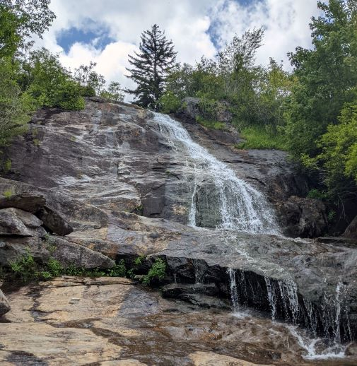

A waterfall in Graveyard Fields, NC - Photo by Sarah Dieffenbaugher
Personal background: Born and raised in FL; moved to NC in 2016. Been married since 10/2020. We don't have any kids, but we do have a furbaby kitty.
Professional background: Nothing in computer science. Currently working in retail...
Academic background: Went to state college for one year while I lived in FL. Took a 2-year hiatus from school when I moved to NC.
Went back in 2018 and got an Associate in Science in 2020 from Mitchell Community College, then transferred to UNCC. I am currently in my third semester here.
Background in the subject matter of this class: Last semester I took ITSC-3155 and worked in a group to create an event management app.
Known programming languages (in order of proficiency):
Java
C++
Python
Primary Computer Platform: Windows 10. Used to have SparkyLinux installed alongside Windows 10, so I have a little bit of experience using a Debian-based OS as well.
Something interesting about myself: I got certified to scuba dive about 10 years ago. Since then I have been to a couple of diving sites in the Caribbean. However, since I moved and started living on my own, I have not gone diving.